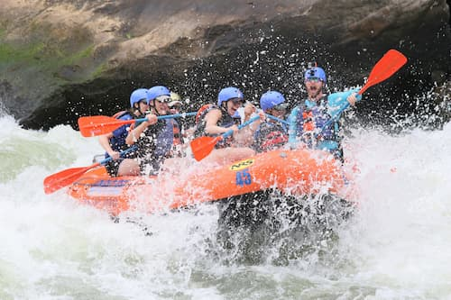
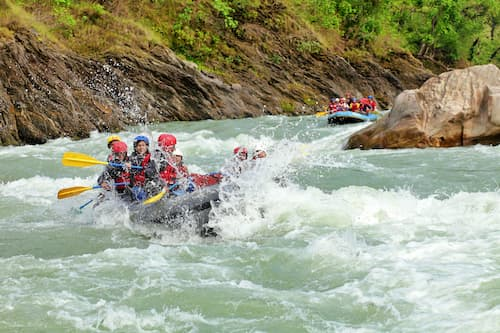

Book a Trip
Reservations can be made below with our booking widgets or via phone by calling 123-4567-890. Reservations made online require at least 3 days advanced notice. Some dates are unavailable if fully booked.
Book NowMain Trips
Our first experience takes you to Jalcomulco, where the rapids of the La Antigua River deliver pure adrenaline through canyons and jungle. With certified guides and all safety gear included, this tour is perfect for thrill-seekers who still want to stay connected to nature.


In the heart of the Huasteca Potosina, our Tampaón River tour combines turquoise waters with class III rapids. Alongside the descent, you’ll enjoy breathtaking scenery like the Tamul Canyon. It’s an ideal experience for groups looking to mix sport and photography.
Finally, we take you south to the Copalita River, which winds through mountains and tropical jungle. This tour includes transportation from Huatulco, specialized gear, and a traditional meal at the end of the ride. Perfect for those seeking a calmer but equally immersive adventure.
| Trip | Information |
|---|---|
| Jalcomulco Rapids, Veracruz | Duration: 2 days / 1 night
Price: $2,800 MXN per person This tour includes lodging in eco-cabins, rafting through class III and IV rapids, and a nighttime bonfire with a traditional dinner. Perfect for those seeking a short getaway packed with adrenaline. |
| Matacanes Descent, Nuevo León | Duration: Full day (12 hours)
Price: $2,200 MXN per person Located in the Sierra de Santiago, this adventure combines canyoning, cliff jumping, rappelling, and swimming through underground rivers. It’s one of the most physically demanding and complete tours available. |
| Copalita River, Oaxaca | Duration: Half day (5 hours)
Price: $1,600 MXN per person This trip is ideal for beginners. It includes transportation from Huatulco, safety gear, and a gentle descent through class II and III rapids, surrounded by tropical jungle and exotic birds. |
| Tampaón River, San Luis Potosí | Duration: 1 day
Price: $1,900 MXN per person Set in the heart of the Huasteca Potosina, this tour features turquoise waters and class III rapids. It includes a certified guide, regional lunch, and access to natural viewpoints like the Tamul Canyon. |